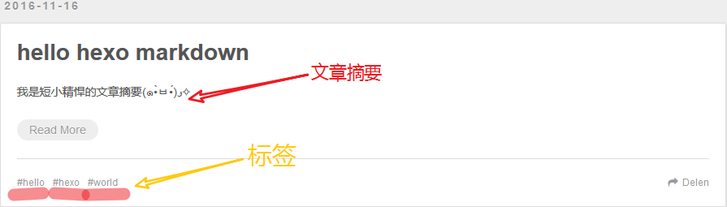

尽管 Hexo 支持 MarkDown，但是我们却不能像写单独的 MarkDown 文档时那样肆无忌惮。由于我们所写的文档是需要被解析为静态网页文件的，所以我们必须严格遵从 Hexo 的规范，这样才能解析出条理清晰的静态网页文件。
新建文档
假设我们的文章名为 “hello hexo markdwon”，在命令行键入以下命令即可：
|
|
上述命令的结果是在 ./hexo/source/_posts 路径下新建了一个 hello-hexo-markdown.md 文件。
然后，我们就可以打开编辑器尽情地写作了。
文档格式
我们使用文本编辑器打开刚刚新建的 hello-hexo-markdown.md 文件，会发现其中已经存在内容：
|
|
这些内容是干嘛的呢？事实上，他们就是用于设置 MarkDown 文档在被解析为静态网页文件时的相关配置，这些配置参数一般位于文件中最上方以 --- 分隔的区域。
其中，title 的值是当前文档名，也是将来在网页中显示的文章标题。
date 值是我们新建文档时的当地时区时间。
tags 值是文档的标签，我们可以随意赋值为文档贴标签。其用法如下：
|
|
上面的配置参数为这篇文档贴上了 hello、hexo、mardown 标签，如果站点使用的主题支持标签功能，MarkDown 文档被解析为静态网页文件后就可以看到效果。
除了以上这些，还有很多预先定义的参数 Front-mtter，我们这里选取一个常用且较为典型的配置参数 categories 讲解一下。
文章分类
categories 是用来给文章分类的，它跟 tags 不同的是其具有顺序性和层次性。
例如，我们写一篇关于 CSS3 动画的文章，我们可能会为其打标签 ”CSS3“、”动画“等，但是我们却会将其分在 CSS/CSS3 类别下，这个是有一定的相关性、顺序性和层次性。简单来说，categories 有点儿像新建文件夹对文档进行分门别类的归置。
categories 的用法同 tags 一样，只不过斗个 categories 值是分先后顺序的。
引用资源
写个博客，有时候我们会想添加个图片啦 O.O，或者其他形式的资源，等等。
这时，有两种解决办法：
- 使用绝对路径引用资源，在 Web 世界中就是资源的 URL
- 使用相对路径引用资源
文章资源文件夹
如果是使用相对路径引用资源，那么我们可以使用 Hexo 提供的资源文件夹功能。
使用文本编辑器打开站点根目录下的 _ config.yml 文件，将 post_asset_folder 值设置为 true。
|
|
上面的操作会开启 Hexo 的文章资源文件管理功能。Hexo 将会在我们每一次通过 hexo new <title> 命令创建新文章时自动创建一个同名文件夹，于是我们便可以将文章所引用的相关资源放到这个同名文件夹下，然后通过相对路径引用。
相对路径引用的标签插件
通过常规的 markdown 语法和相对路径来引用图片和其它资源可能会导致它们在存档页或者主页上显示不正确。我们可以通过使用 Hexo 提供的标签插件来解决这个问题：
|
|
比如说：当你打开文章资源文件夹功能后，你把一个 example.jpg 图片放在了你的资源文件夹中，如果通过使用相对路径的常规 markdown 语法  ，它将 不会 出现在首页上。（但是它会在文章中按你期待的方式工作）
！！！注意： 如果已经开启了文章的资源文件夹功能，当使用 MarkDown 语法引用相对路径下的资源时，只需 ./资源名称，不用在引用路径中添加同名文件夹目录层级。
正确的引用图片方式是使用下列的标签插件而不是 markdown ：
|
|
通过这种方式，图片将会同时出现在文章和主页以及归档页中。
文章摘要
有的时候，主题模板配置的不够好的话，Hexo 最终生成的静态站点是不会自动生成文章摘要的。
所以，为了保险起见，我们也自己手动设置文章摘要，这样也方便避免自动生成的摘要不优雅的情况。
设置文章摘要，我们只需在想显示为摘要的内容之后添 <!-- more --> 即可。像下面这样：
|
|
这样，<!-- more --> 之前、文档配置参数之后中的内容便会被渲染为站点中的文章摘要。
注意！文章摘要在文章详情页是正文中最前面的内容。
生成文件
清除缓存文件
为了避免不必要的错误，在生成静态文件前，强烈建议先运行以下命令：
|
|
上述命令会清除本地站点文件夹下的缓存文件（db.json）和已有的静态文件（public）。
生成静态文件
写好 MarkDown 文档之后，我们就可使用以下命令生成静态文件：
|
|
然后我们就可以启动 Hexo 服务器，使用浏览器打开 http://localhost:4000 查看效果了。
示范
下图是一篇经过配置的简单文档，生成静态文件后在网站首页显示的结果。我们可以看到手动设置的摘要，以及打的标签生效了。
